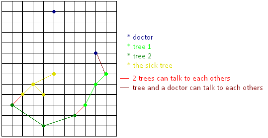

Problem D |
Dying Tree |
Time
Limit : 2 seconds |
||||
|
|
||||||
| Input | ||||||
Input begins with a number t < 100 representing the number of test cases; t test cases follow. Each test case begins with 4 integers 0 < n < 100, 0 < m ≤ 10, 0 ≤ k, d ≤ 100 where n is the number of trees in the forest, m is the number of doctors in the forest, k & d are as described above. The next m lines represent the positions of doctors in x, y coordinates. The following lines describe the set of trees in the forest. Each set begins with an integer 0 < b < 10 representing the number of branches this tree has. Followed by b points representing the branches positions. The sick tree is always the first tree in the input. All points coordinates are integers with absolute values less than or equal to 1000. |
||||||
| Output | ||||||
For each test case determine whether or not the trees can help their friend by finding a doctor for her. If yes, then print "Tree can be saved :)", if no then print "Tree can't be saved :(". |
||||||
| Sample Input | Sample Output | |||||
2 |
Tree can be saved :) Tree can't be saved :( |
|||||
Problem Setter: Asmaa Magdi Illustration: The following diagram depicts Sample #1  |
||||||